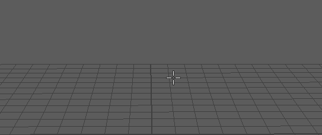

设定“关节工具”(Joint Tool)设置
- 在“装备”(Rigging)菜单集中，选择“骨架 > 关节工具”(Skeleton > Joint Tool) >
 。
。
将显示“关节工具”(Joint Tool)设置。
- 在“关节设置”(Joint Settings)部分中，通过从“对称”(Symmetry)下拉列表中选择“X 轴”(X-axis)、“Y 轴”(Y-axis)或“Z 轴”(Z-axis)设置对称轴。
默认情况下，“对称”(Symmetry)设置为“禁用”(Off)。
关节“对称”(Symmetry)下拉列表
创建对称关节
- 在模型中单击您要放置关节的位置。
提示： 创建关节之前，请启用“捕捉到投影中心”(Snap to Projected Center) ，以自动将其放置在模型中央。将创建第一个关节（源关节）。还会创建第二个关节（受驱动关节），并通过对称连接将其约束至源关节。
单击以放置关节
注： 在当前实现中，连接了“平移”(Translate)、“旋转”(Rotate)、“缩放”(Scale)、“旋转顺序”(Rotation Order)和“关节方向”(Joint Orient)属性。所有其他关节属性未连接并保持独立。所有受驱动关节和关节链显示为粉红色，以便于识别。
- 在模型上再次单击要创建关节链中的下一个关节的位置。
将在第一个关节和第二个关节之间出现骨骼。
提示： 在创建期间使用“插入”(Insert)移动活动关节。 - 继续单击，直到创建完关节链中的所有关节。
- 按
 或
或  以完成关节链。
以完成关节链。
现在，当您修改源关节时，受驱动关节会对称更新。